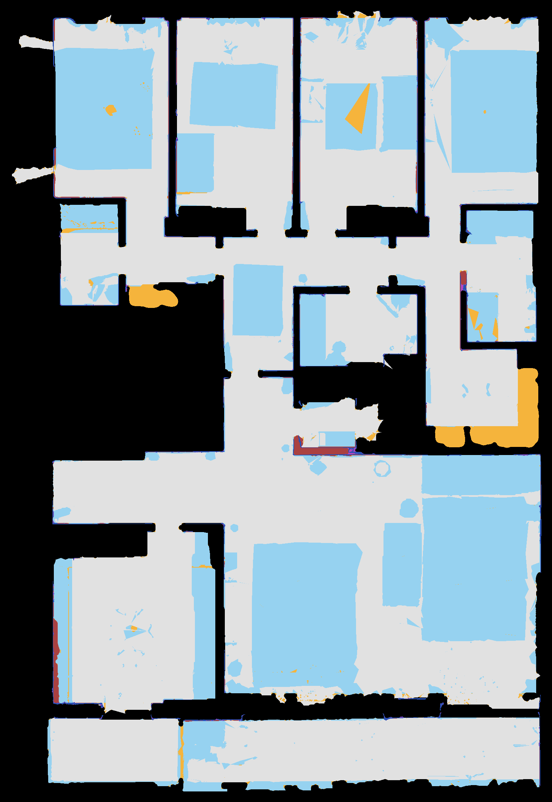

HM3D v0.2 train · 2026-11-04 기존 후보의 독립 검토용. 수정 완료본 또는 정답 평면도가 아닙니다.
흰색: 가구를 제거한 실내 바닥 영역의 추정치. 검정: 벽·외부·미관측 영역이 혼재하며 실제 occupied의 확정 라벨이 아닙니다. 원본은 바닥 +1.65 m roof-cut. 2DFP 해상도 1 cm/pixel. 관측 불충분은 별도 판단으로 남겨주세요.
근거 색상: 회색=실내 영역 기본 표시, 하늘색=바닥 관측 없이 천장으로 지지된 영역, 주황=바닥·천장 직접 지지 없이 보완한 영역, 적갈색=내부 미관측 영역, 파랑=관측 벽 후보, 보라=보완한 벽. 색상은 겹치는 영역에서 뒤의 항목이 우선합니다.

방 간의 연결 부분이 occupeid 로 되어 있음.